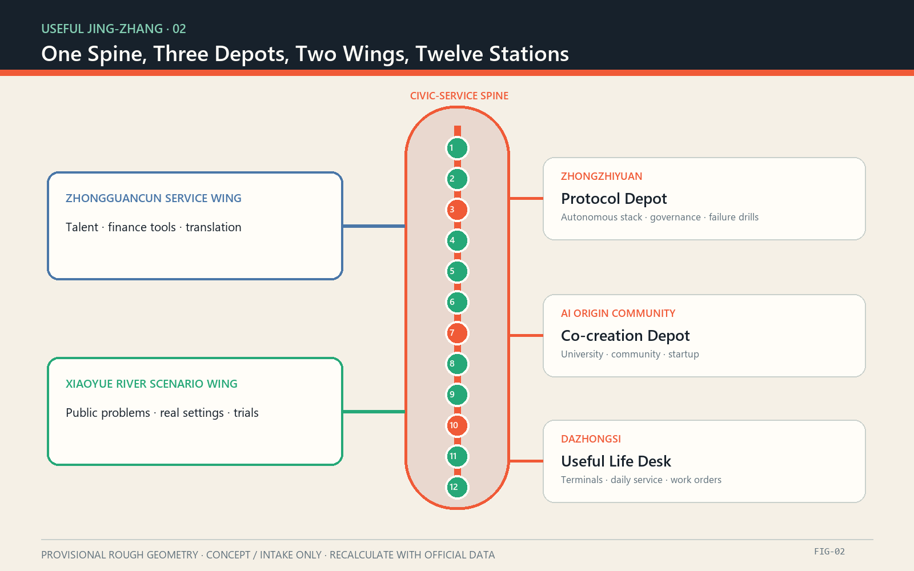
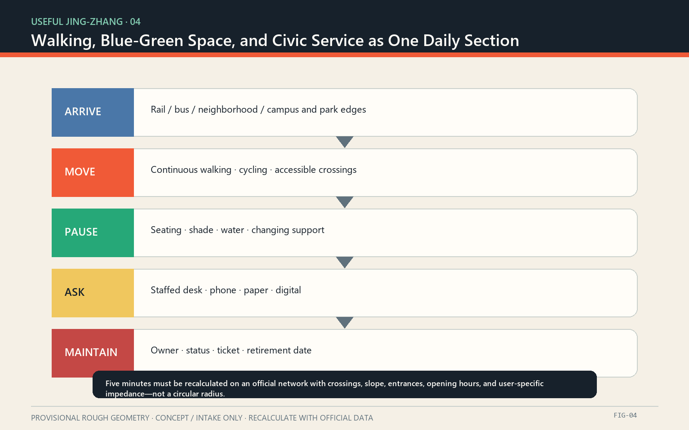

43.6 km²
Coordinated research: ecosystem and institutions
An AI city starts with whether a small civic task can be completed.
Current geometry is provisional and rough. Recalculate all locations, areas, coverage, and phases with official data.

Coordinated research: ecosystem and institutions
Overall design: service network
Key areas: three-depot validation
Protocol Depot | autonomous stack, governance, failure drills
Co-creation Depot | university, community, startup
Useful Life Desk | daily service, terminals, work orders
Research, public open space, daily service, and community care are diagrammatic roles, not statutory parcels.
Survey first, light retrofit second, reversible additions preferred; new work needs professional review.
No retain-renovate-demolish decision without ownership, structure, heritage, fire, utility, and planning data.

scenario cards
industry validation scenarios
human or offline fallback
Provisional calculated site area, low confidence
Diagram green ratio, low confidence
Diagram public-space ratio, low confidence
agent.1 concept | agent.2 global ecosystem | agent.3 12 scenarios and 6 personas | agent.4 public space and 3 landmarks | agent.5 three-layer culture | agent.6 annual operations
See self_check.json at submission time
Provisional geometry warning does not block content review
History, public value, feasibility, privacy, and accessibility
Announcement, cleared taskbook, repository package, and ten official or operator-primary case sources are registered in sources.json.
See assumptions.json: official geometry, services, networks, ownership, buildings, utilities, and heritage controls remain missing; depots, stations, and annual operations are concepts.